Galerie der Realisierten Projekte
Unsere Arbeiten in der Praxis
Entdecken Sie die Vielfalt unserer Eingriffe bei Privatpersonen, Liegenschaftsverwaltungen und Landschaftspartnern in Genf und im Kanton Waadt.
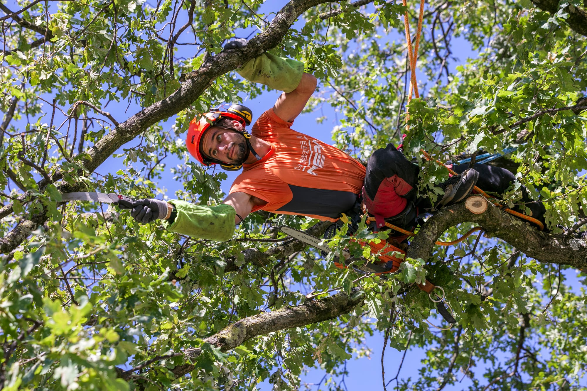
Seiltechnik
Vernünftiger Schnitt im Kronenbereich eines Grossbaums
Vernünftiger Schnitt im Kronenbereich eines Grossbaums
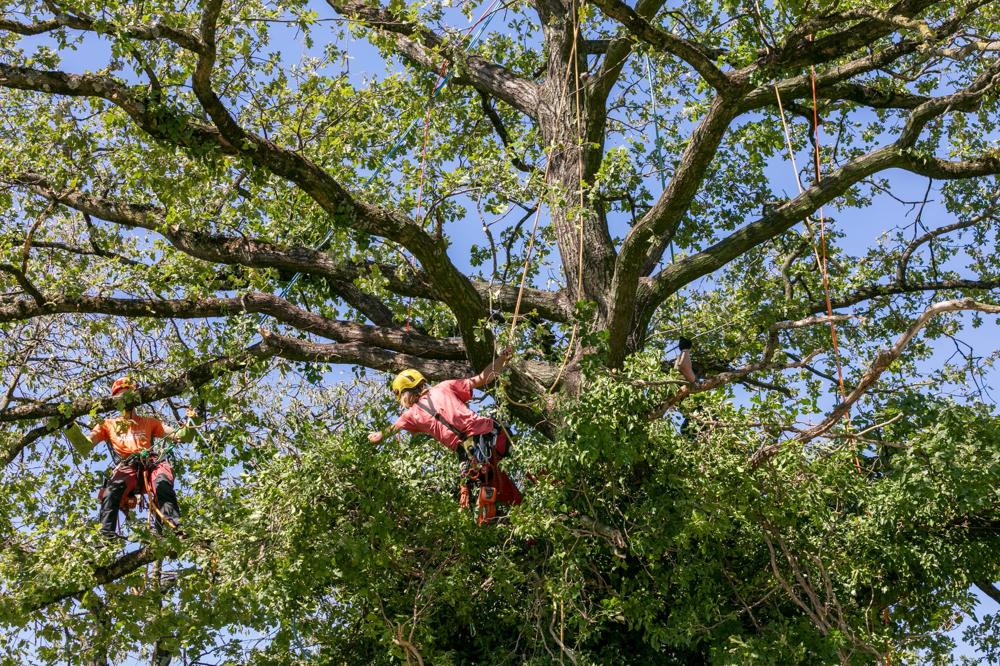
Technisches Klettern
Empfindlicher Zugang an zertifizierten Seilen
Empfindlicher Zugang an zertifizierten Seilen
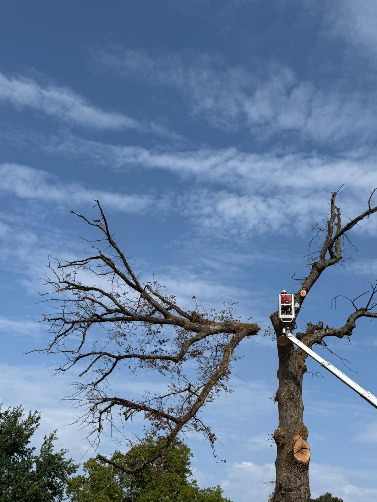
Obstschnitt
Sorgfältige Pflege von Obstbäumen
Sorgfältige Pflege von Obstbäumen
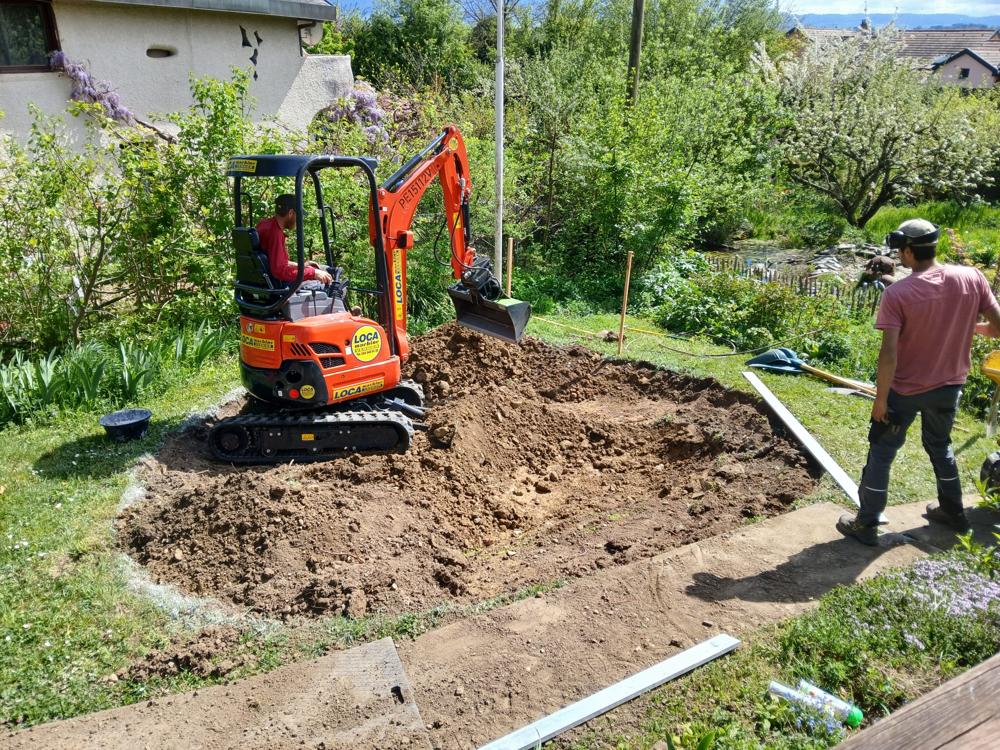
Baumversorgung
Entfernung abgestorbener und gefährlicher Äste
Entfernung abgestorbener und gefährlicher Äste
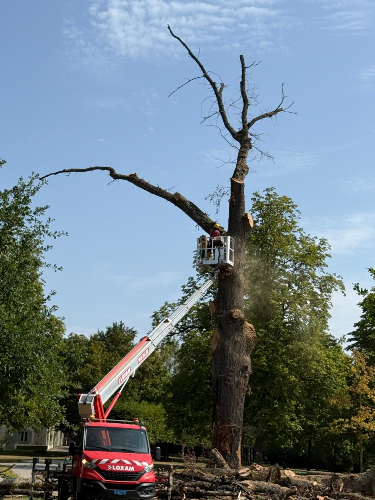
Hubbühne
Abbau eines Baums über Gebäuden
Abbau eines Baums über Gebäuden
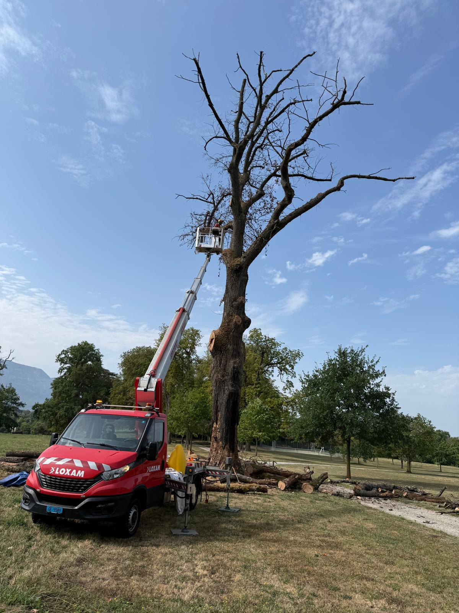
Hubbühne
Sicherung einer Krone in grosser Höhe
Sicherung einer Krone in grosser Höhe
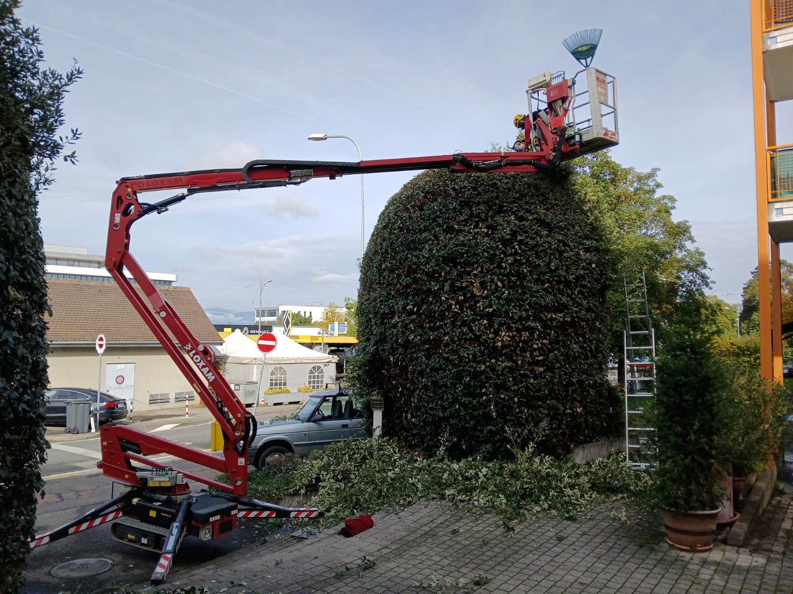
Landschaftsbau
Harmonisches und begrüntes Landschaftsdesign
Harmonisches und begrüntes Landschaftsdesign
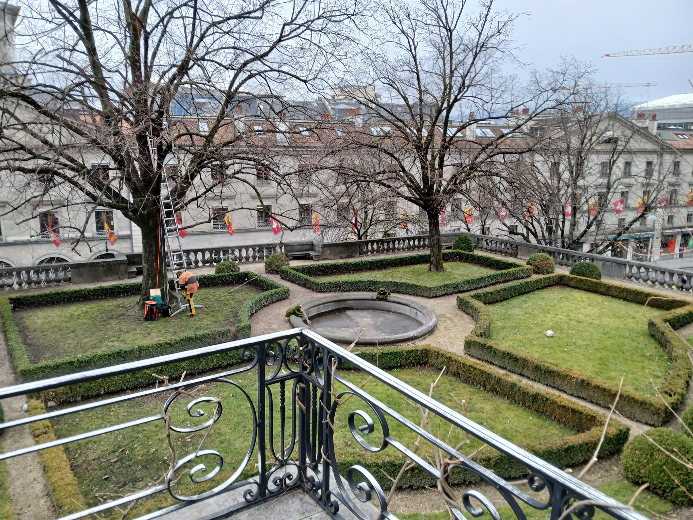
Gestaltung
Lebendhecken und Bodenamérica
Lebendhecken und Bodenamérica
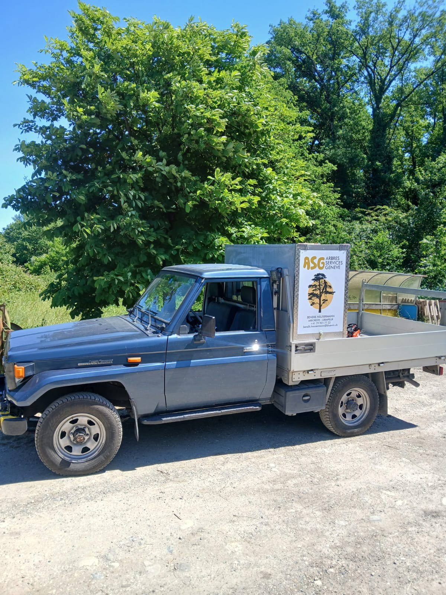
Transport 4T
Abfuhr von Schnittresten und Stammteilen
Abfuhr von Schnittresten und Stammteilen
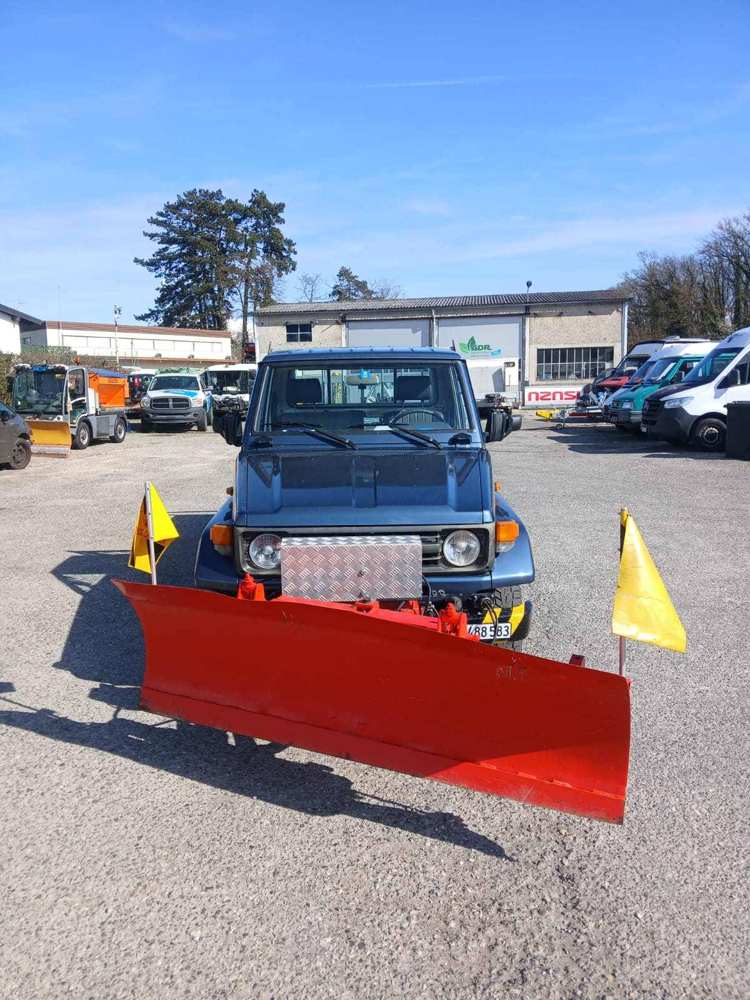
Häckseln & Räumung
Komplette Reinigung der Baustelle nach dem Schnitt
Komplette Reinigung der Baustelle nach dem Schnitt
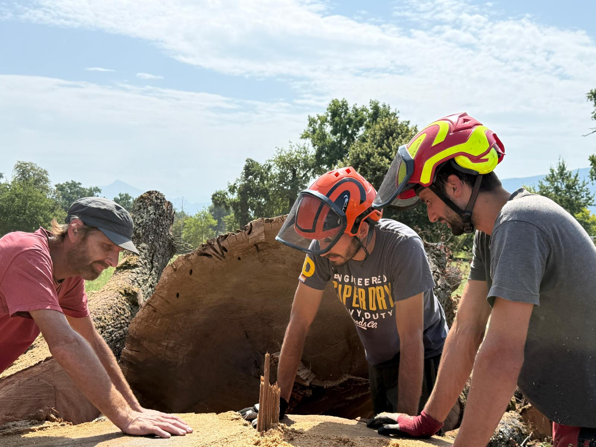
ASG Team
Sicherheits-Briefing und Vorbereitung des Materials
Sicherheits-Briefing und Vorbereitung des Materials
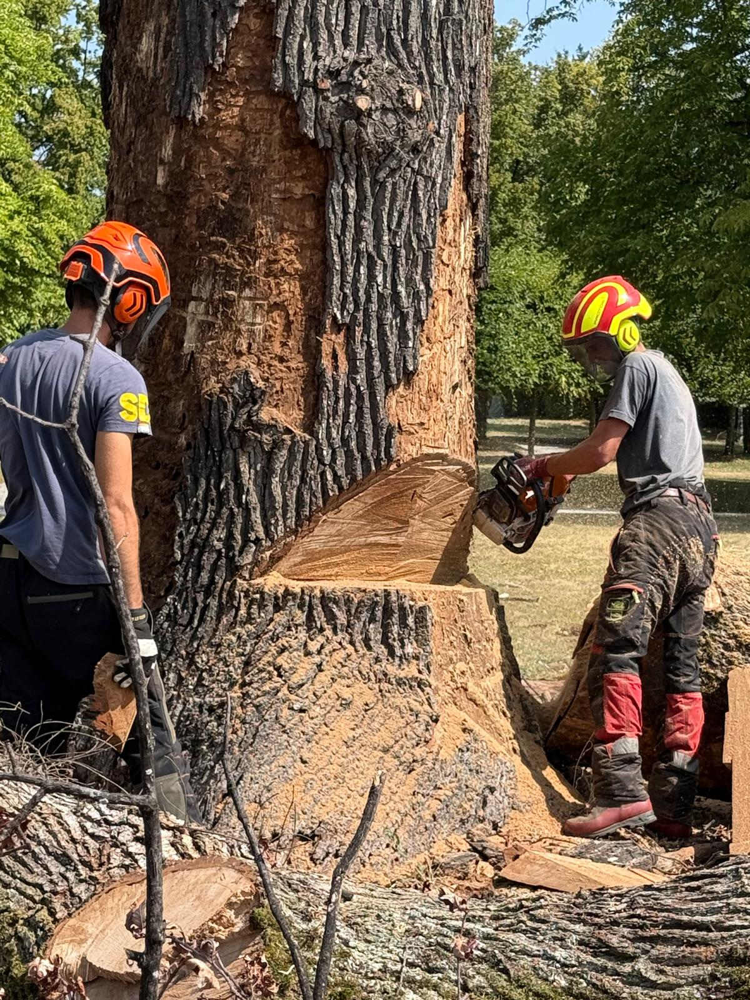
ASG Team
Koordination am Boden und Lastenführung
Koordination am Boden und Lastenführung
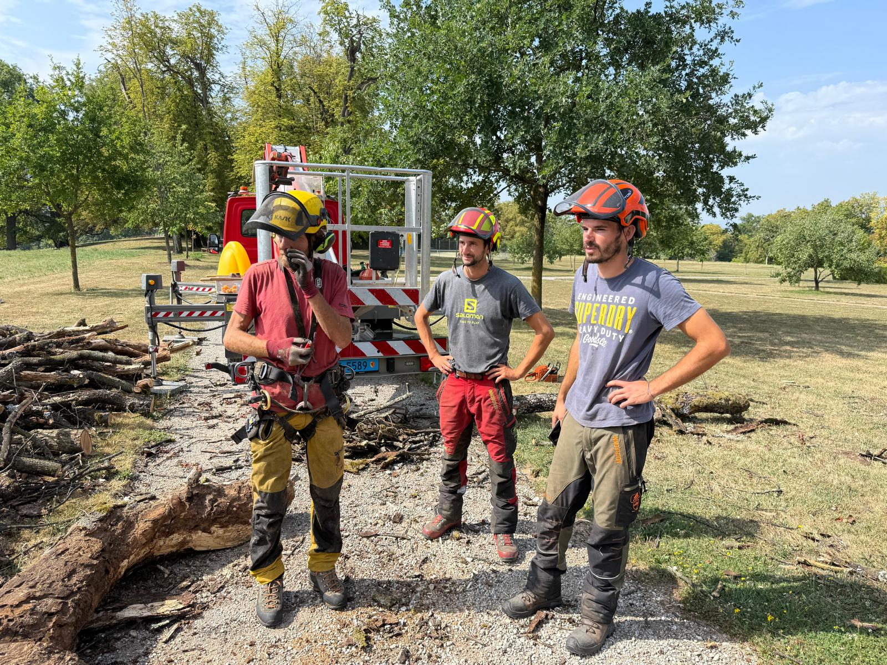
Sicherheit PSA
Schutzausrüstung nach Schweizer Normen
Schutzausrüstung nach Schweizer Normen
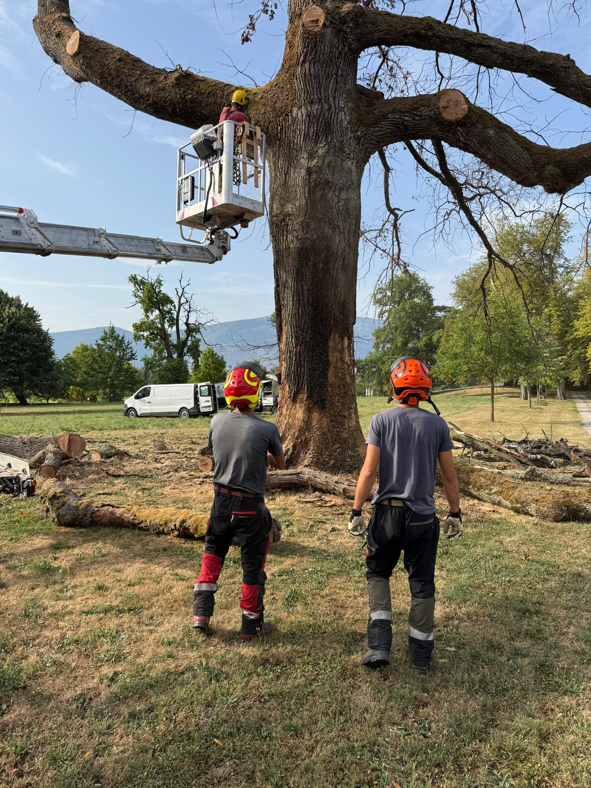
Präzision
Sauberer Schnitt, der den Kallusrand fördert
Sauberer Schnitt, der den Kallusrand fördert